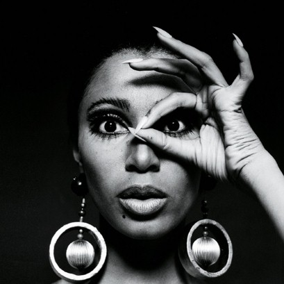
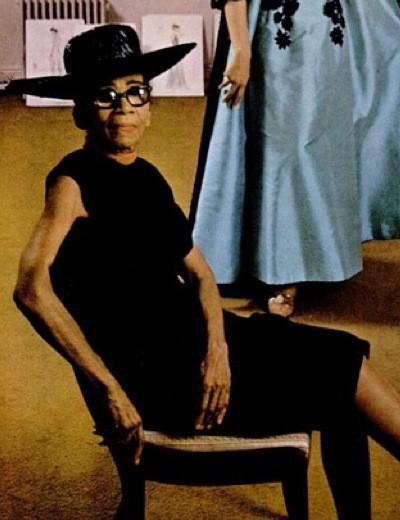
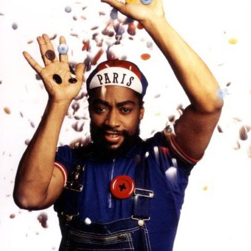
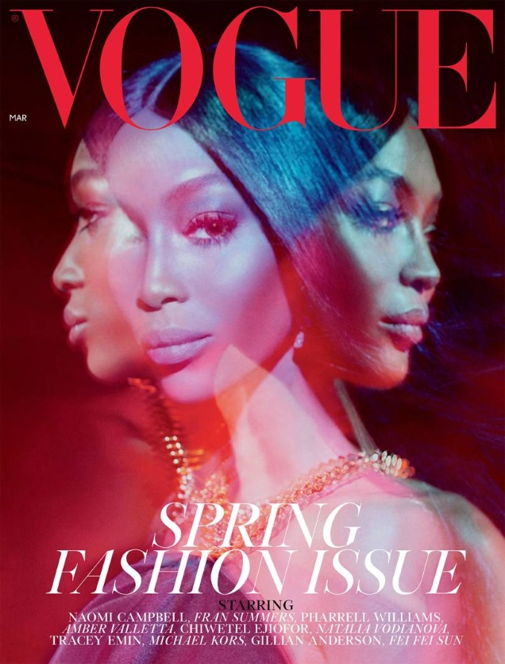
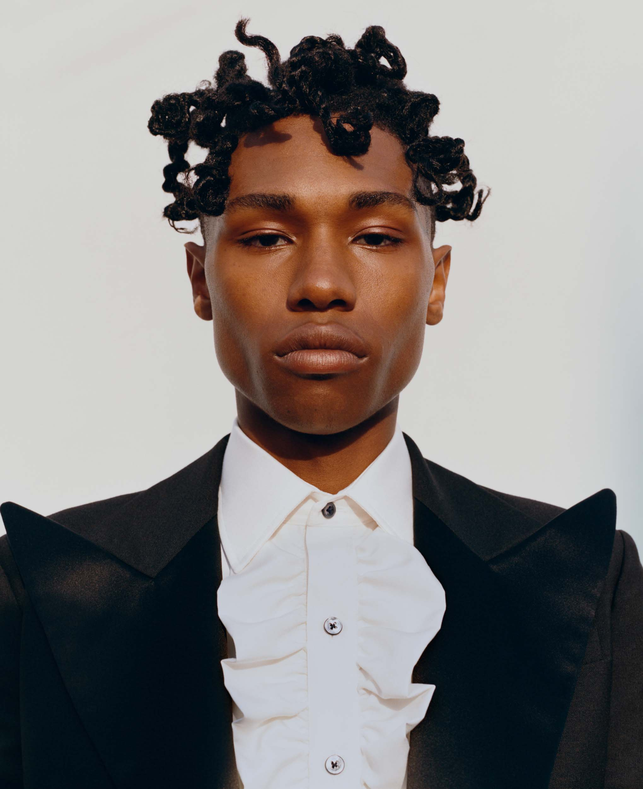

Fashioning Black Excellence
A Celebration of Black Designers and Models
The fashion industry itself has only very recently begun to highlight and emphasize Black designers, models, photographers, and influencers, but many Black fashion trailblazers have existed since the beginning of the fashion industry as we know it.
Here’s a look at the six notable names you should know and the work they’ve done:
1. Donyale Luna

Hailing from Detroit, Donyale Luna is considered to be one of the first Black supermodels. She was an American actress and model throughout the 1960s, but her most notable accomplishment is the fact that she was the first-ever African American to grace the cover of Vogue. And if you want to know a fun fact about her, she’s the model that RuPaul mentions in her song “Supermodel”!
2. Ann Cole Lowe

This African American designer quickly shot to design fame after taking over as a seamstress when her mother died. She soon designed clothing for wealthy families like the Rockefellers and the Roosevelts. And in fact, her most notable client was Jackie Bouvier, better known as Jackie O, the First Lady of the United States. Lowe was responsible for the design behind Jackie’s iconic wedding dress, but she was often denied name-credit in magazines and her work was often unattributed in photographs as well. Despite these setbacks, in 1968, Lowe became the first Black person to own a business on Madison Ave in New York City.
3. Patrick Kelly

As most fashion-industry hopefuls do, Patrick Kelly moved to New York City with the dream of making it big as a fashion designer. Little did he know that a chance encounter with the model Pat Cleveland would completely change his life. In fact, she loved his designs so much that she encouraged him to move to Paris--and he did. Now he’s best known for his dresses and dressed fashion icons like Naomi Campbell, Grace Jones, and Princess Diana. In 1988, he made history by becoming not only the first American but also the first Black person to be voted in France’s Chambre Syndicale du Prêt-à-Porter des Couturiers et des Créateurs de Mode (which is an organization that controls the ready-to-wear fashion in France).
4. Naomi Campbell

Naomi Campbell is an English model who was easily one of the most recognizable supermodels of the late 1980s, 1990s, and of all time. Discovered at a very young age, Campbell appeared on the cover of Elle before her 16th birthday! Naomi leads the way when it comes to gracing various magazine covers. She was the first Black model to be on the cover of British Vogue since Donyale Luna. From there, she went on to be the first Black model to appear on the cover of French Vogue and the first Black model to appear on the cover of American Vogue’s September Issue, one of its biggest issues each year. As a result, the fashion industry recognizes Naomi Campbell as one of the six supermodels of her generation.
5. Rihanna

Rihanna is not a new name, but she did do something extraordinarily remarkable in the fashion world not too long ago. Launching her Savage X Fenty lingerie brand in May of 2018, Rihanna quickly displayed her ability to move from the music industry and into the fashion world. And after its successful launch featuring models of all varying ethnicities, genders, and stature, she continued to stun the fashion world by announcing her launch of a luxury fashion line, Fenty, through LVMH Moet Hennessey Louis Vuitton. In doing so, she became not only the first Black woman to launch a brand through the LVMH Maison, but also the first woman. This monumental launch only proves that Rihanna is capable of anything and everything.
6. Tyler Mitchell

Tyler Mitchell is an immensely talented African-American photographer, who has accomplished more in his 23-years of life than most people could even dream of doing in one lifetime. So, why should you know who he is? Fashion Photography was (and often still is) traditionally monopolized by white photographers, especially when it came to shooting major magazine covers, until 2018! Let that sink in...While Black models and designers entered the scene decades ago, it wasn’t until 2018 that Tyler Mitchell became the first African American to shoot a cover of Vogue. Oh, and did I mention that the cover star was Beyoncé?! It took the magazine 125 years before it allowed the creative vision of a Black photographer to grace the cover. The reason I’m placing Tyler Mitchell at the end of this list is because his story specifically shows that while the fashion industry has come a long way, it still has so much further to go.
I mentioned above that the fashion industry has been working diligently to increase diversity, but the journey to incorporating all people has not been a linear one. In fact, when you dive further into the narratives of each individual listed above, you begin to see the hardships they not only faced but endured. These six Black artists, designers, and models are at the very core of our semester’s theme, Resistance. Resistance is a multifaceted word, but we have chosen to define Resistance as a means of challenging existing trends in the hope of cultivating a future of empowerment and endless possibility. And who better embodies this definition than the likes of Naomi Campbell, Tyler Mitchell, Ann Cole Lowe, Rihanna, Patrick Kelly, and Donyale Luna, who, despite all odds, redefined the fashion industry. And while Resistance is a key part of the Black History, a word that should better be associated with it is Resilience. In the stories told above, it’s obvious that the need to persist in the face of adversity was essential to each individual. They all refused to take “No” for an answer. It is their very ability to challenge the discrimination that led them to becoming change-makers in an otherwise stagnant industry. It is for this reason, that, by remembering Black History month, we celebrate both the triumphs and tribulations for making these individuals who they are today. But above all, their successes and failures are opening doors for those who have been typically barred from the fashion industry, which is why it is important that we continue to educate ourselves on the stories of people of color and celebrate Black history not just in February but every day.